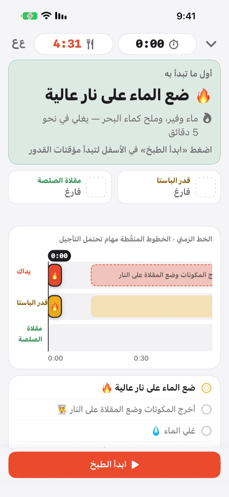
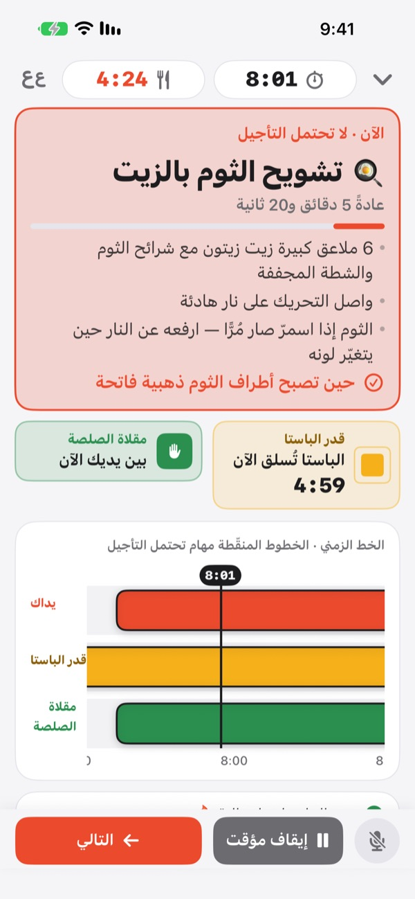
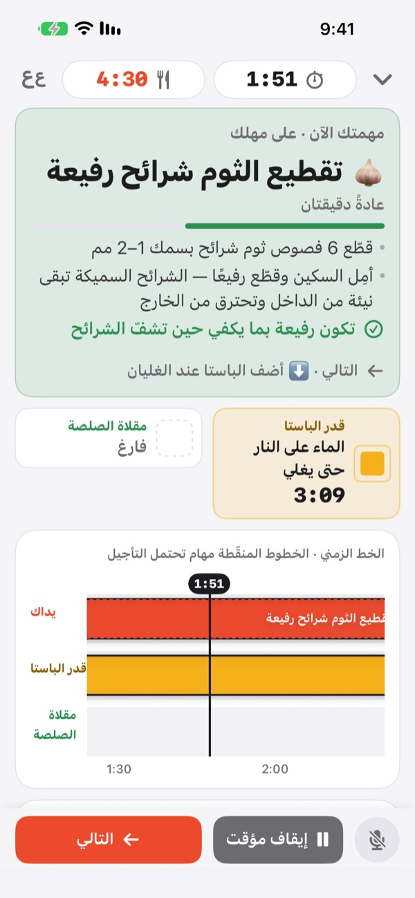
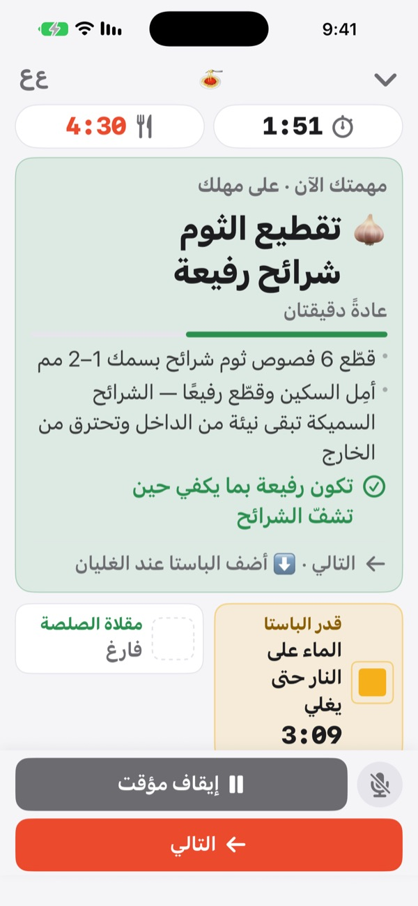

الباستا في قدر.
والصلصة جاهزة في الأثناء.
حين يسير قدران بسرعتين مختلفتين، يعرض لك Geusaie الشيء الوحيد الذي يجب أن تفعله يداك الآن. ويُحسب توقيت الصلصة عكسيًا من لحظة خروج الباستا.
وصفتا الباستا وكل أدوات الطبخ مجانية. لا حاجة إلى حساب.

جرّب بنفسك
اطبخ مقلاة أليو إي أوليو بسرعة 20 ضعفًا. اضغط «ابدأ الطبخ»، ثم اضغط «التالي» كلما أنهيت مهمة. وراقب ما تفعله البطاقة حين يحين وقت تصفية الباستا.
ثلاثة مؤقتات تعمل، ومع ذلك تعجّنت الباستا؟
مؤقت للباستا، ومؤقت للصلصة، والثوم في رأسك، وفجأة لا تعرف ما الذي يأتي أولًا. أنت في منتصف التقطيع حين يحين وقت تصفية الباستا، والصلصة تتأخر دقيقتين. يعرف Geusaie الوصفة على أنها «هذا ثم ذاك»، لذلك يخبرك دائمًا بالشيء الوحيد الذي تفعله الآن.
إن كانت المهمة لا تحتمل الانتظار، تحمرّ البطاقة
تصفية الباستا، أو ثوم على وشك الاحتراق: حين تفسد الطبخة إن تأخرت مهمة، تتحول البطاقة إلى لون الطين المحروق وتطلب منك ترك التقطيع جانبًا.
وعندما يجهز قدر يصلك إشعار حتى لو لم تكن تنظر، ويخبرك بما تفعله الآن.

التقطيع يملأ الفراغات
تقطيع الثوم وبشر الجبن والقياس: لا شيء منها مرتبط بساعة، لذلك لا يعدّ Geusaie لها الثواني. يمتلئ الشريط حين تكون يداك فارغتين، ويتوقف حين يناديك قدر، ثم يكمل من حيث توقفت.
أشعل الموقد متأخرًا ثلاث دقائق، فيتأخر كل ما بعده ثلاث دقائق. الجدول يُعاد حسابه مما فعلته فعلًا.

أسنده على السطح، وتنقّل بصوتك
أربعة أحجام للنص لتقرأه من خطوة أو خطوتين، والشاشة تبقى مضاءة طوال الطبخ.
يداك مبللتان؟ قل «التالي» فينتقل إلى المهمة التالية دون لمسة.

ثلاث خطوات إلى العشاء
- 1
اختر طبقًا
يعرض كل طبق مدته التقريبية وعدد القدور التي تحتاجها.
- 2
اضغط «ابدأ الطبخ»
تظهر مهمتك الأولى، وتبدأ ساعات القدور لحظة الضغط.
- 3
انتهيت؟ التالي.
اضغط الزر أو قل «التالي»، فتظهر مهمتك التالية.
اللون يخبرك بمدى الاستعجال
- أخضر
- تقطيع وتحضير. على مهلك.
- خردلي
- قدر يحتاجك. نفّذها الآن، لكن دون عجلة.
- طيني محمرّ
- إن انتظرت تعجّنت الباستا أو احترق الثوم. نفّذها الآن.
- مربعات القدور
- المربع الذي يصغر هو الوقت المتبقي. وقت القدور لا يُخفى أبدًا.
في الخط الزمني، الأشرطة المنقّطة مهام تحتمل التأجيل.
وصفات الباستا مجانية دائمًا
مجاني
- وصفتا الباستا
- مؤقت لكل قدر، مع الخط الزمني كاملًا
- إشعار حين يجهز قدر
- «التالي» بالصوت دون لمس
- أربعة أحجام للنص
Geusaie Pro
- باقة الحساء واليخنات: كيمتشي جيغيه مع لفائف البيض، ودوينجانغ جيغيه مع فطائر الكوسا
- افتح وصفة من Siri أو الاختصارات
اختر اشتراكًا أسبوعيًا أو شهريًا أو سنويًا، أو ادفع مرة واحدة مدى الحياة. الإكراميات من الإعدادات منفصلة ولا تفتح شيئًا.
دون حساب ودون إعلانات، ويعمل دون اتصال بالإنترنت.
أسئلة
أقول «التالي» ولا ينتقل.
زر الميكروفون في الأسفل يكون أحمر وهو يستمع، ورماديًا وهو متوقف. اسمح بالميكروفون والتعرّف على الكلام في المرة الأولى، وإن رفضت فأعد تفعيلهما من الإعدادات > Geusaie. يستمع التطبيق للكلمة المكتوبة على زر «التالي» بلغة التطبيق. وفي مطبخ صاخب جدًا اضغط «التالي» فحسب.
انتهى قدر ولم يصلني إشعار.
تأكد أن الإشعارات مفعّلة في الإعدادات > الإشعارات > Geusaie. وقد يكتمها وضع التركيز. الإشعارات تأتي فقط حين يجهز قدر، ومهام التحضير لا تزعجك أبدًا.
ماذا يحدث للجدول إن بدأت متأخرًا؟
يُعاد حسابه من الوقت الذي فعلت فيه الأشياء فعلًا. أشعل الموقد متأخرًا ثلاث دقائق فيتأخر كل ما بعده ثلاث دقائق، بينما يبقى توقيت الصلصة محسوبًا عكسيًا من لحظة خروج الباستا.
النص صغير جدًا.
في شاشة الطبخ اضغط زر حجم النص في الأعلى واختر عادي أو كبير أو أكبر أو الأكبر. ويُحفظ اختيارك.
هل تنطفئ الشاشة أثناء الطبخ؟
لا. تبقى الشاشة مضاءة طوال الطبخ، فلا تحتاج إلى لمسها بيدين مبللتين.
ما الأطباق المتاحة؟
أليو إي أوليو (نحو 15 دقيقة، قدران) وباستا الطماطم بالكريمة (نحو 20 دقيقة، قدران)، مبنيتان على وصفات من Serious Eats وGimme Some Oven وRecipeTin Eats وThe Burnt Butter Table. ويضيف Geusaie Pro باقة الحساء واليخنات: كيمتشي جيغيه مع لفائف البيض، ودوينجانغ جيغيه مع فطائر الكوسا. أي طبق يعمل فيه قدران معًا يناسب التطبيق، فأخبرنا بما تحب أن تراه بعد ذلك.
هل يُسجَّل صوتي؟
لا. يستمع فقط لكلمة «التالي» ولا يسجّل أي صوت أو يحفظه. وحيث يدعم الجهاز ذلك، يتم التعرّف على الكلام على الجهاز نفسه. ولا تُجمع أي بيانات شخصية.
هل أستطيع فتحه بـ Siri؟
نعم، مع Geusaie Pro. اختر طبقًا في Siri أو تطبيق الاختصارات فتُفتح شاشة طبخه مباشرة. وتبدأ الساعات حين تضغط «ابدأ الطبخ» عندما تكون مستعدًا لوضع الماء.
على أي أجهزة يعمل؟
iPhone وiPad بنظام iOS 17 أو أحدث. لا حاجة إلى حساب أو اتصال بالإنترنت.
كيف أبلّغ عن مشكلة أو أقترح وصفة؟
استخدم الإعدادات > إرسال ملاحظات داخل التطبيق، أو راسلنا بالبريد أدناه. ذكر طراز جهازك وإصدار iOS يساعدنا على المتابعة أسرع. نرد عادة خلال أيام قليلة.
علقت، أو وجدت خللًا، أو لديك وصفة في بالك؟ راسلنا على leeo@kakao.com.